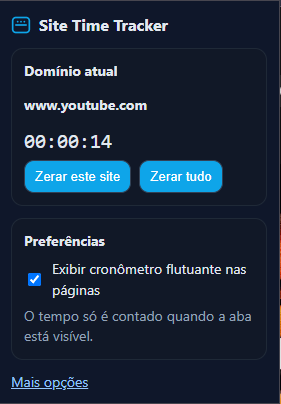
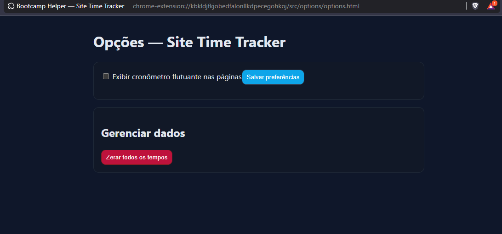
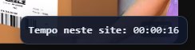

Como funciona
- O content script envia um “tick” por segundo apenas quando a aba está visível.
- O background soma esse tempo por domínio no
chrome.storage.local.
- O popup mostra o total do domínio atual e permite zerar.
- Há uma preferência para exibir (ou não) o painel flutuante.
Permissões
storage — persistir tempos e preferências.host_permissions — http://*/* e https://*/* para rodar o
content script.
Instalação (modo desenvolvedor)
- Acesse chrome://extensions e ative Developer mode.
- Clique em Load unpacked e selecione a pasta do projeto.
- Clique no ícone da extensão e veja o tempo do site atual.
Capturas de tela
Adicione imagens em docs/img/ com nomes popup.png,
options.png e content.png.
